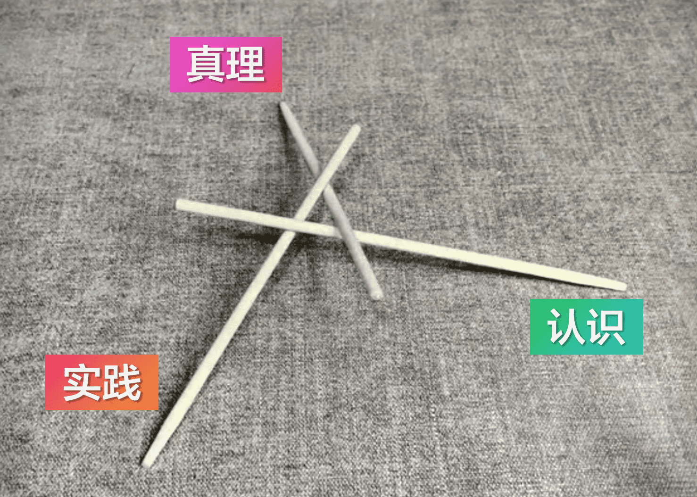
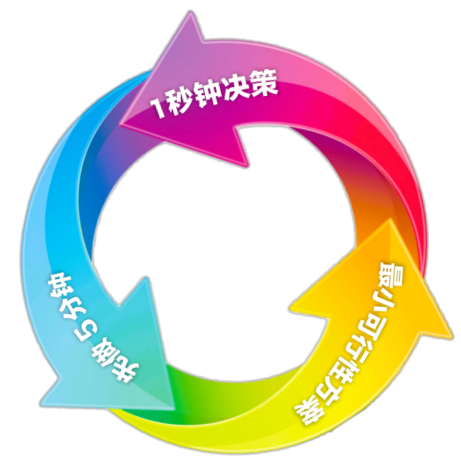
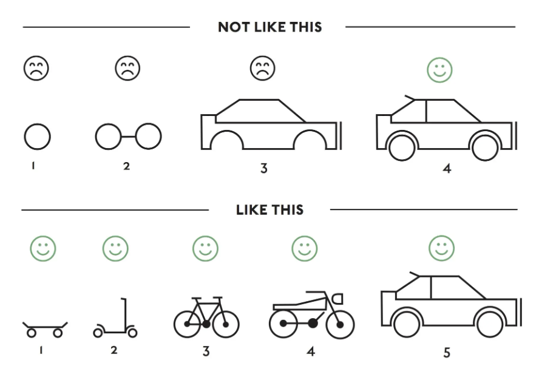

一、三句话1. 实践是真理现实力量的表达2. 认识是对实践的观察和总结3. 真理可以用正确的认识描述二、三个方法1. 立即行动的奥秘：“1秒钟决策”2. 进入状态的奥秘：“先做5分钟”3. 持续实践的奥秘：“最小可行性方案”
实践是“身”的运动。以身入局，以身证道，以身作则，身体力行。
以身入局：以身体的运动倒逼认知的改变
“局”就是现状、外部环境、既有认识等的藩篱，所谓“局面”、“局限”。以身入局，就是将自己的身体投入局面之中，代入局限之内，运动破局。特别地，将自己的身体投入既有认识的局（你的认识，给你带来了一个局），通过身体的运动与局面的交互，打破既有认识的局限。以身入局，强调必须要有身的参与。仅有认识的参与，是不足以打破认识自身的局限的，要以身体的运动倒过来逼迫认识的改变。
以身证道：以身体的运动催发真理的表达
“道”就是真理、真相、真实的规律，但这个“道”（真理）并不是独立地、客观地存在着的，而是必须要在身体的运动中才能展现和发挥作用。所谓“证道”，并非要“证明有一个道的存在”，而是要“使道的作用展现出来”，展现出来，借以观察和总结，形成认识（以新的认识突破、覆盖、纠正旧的、错误的认识）。这个过程必须要有身体的参与，仅有认识的参与，并不能使真理的作用发挥和展现出来，所以叫做“以身证道”。
以身作则：以身体的运动制定运动的法则
“则”就是法则、规则、遵循的方便，是一种认识（自身局限被突破）后的调整改进。以身作则，强调必须要有身的参与，要由身体的运动去制定规则，仅有认识的参与，是不足以制定规则的。只有以身作的则，这样的规则才能靠得住、站得出（关键时刻能站出来）、顶得上。
身体力行：身体的运动其标志是力的输出
身体力行，强调除了要有身的参与，还要有力的输出，身的参与的实质就是力的输出，力的输出就是运动。实践是身的运动，没有力的输出，身的参与便苍白无力，这样的实践不足以使真理的作用发挥和展现出来。
实践和真理是一组对象性关系，而不是主客二分关系。主客二分关系意味着主客体在未发生互动之前便可独立存在和已独立存在了，对象性关系则意味着互为对象性关系的主体之间必须在彼此需要和互动关系中才能存在自身。实践和真理是对象性关系，真理如果脱离了实践便不复存在（失去真理之所以为真理的基础，失去真理自身的判据），实践如果脱离了真理也不复存在（实践过程中没有伴随真理的表达，则实践必为非实践）。
即是说：——
（1）要确认所谓“实践”是否为实践，必须要确认所谓“实践”过程中是否有真理的表达发生。
（2）要确认所谓“真理”是否为真理，必须要确认所谓“真理”表达时是否伴随有实践的过程。
举一个浪漫点的例子，《棋魂》中的佐为在魂魄消散以后，进藤光怎么也找不到他，最终只有在不断地对弈落子过程中，才能看到佐为的表达。实践是真理现实力量的表达，没有实践，所谓“真理”就是虚幻的、无力量的、不存在的，没有脱离实践的真理！
认识是“思”的运动（田指用头脑考虑，心指用心灵感受），“思”的对象是实践的过程和结果。
区别认识与知识：未经实践只有知识，经过实践才有认识
“思”的运动即对实践的观察、扬弃、总结，最终形成认识。
即是说：——
（1）认识是对实践的观察和总结，认识必须通过实践获得，所有未经实践的，都不能称为认识。
（2）通过书本获得、道听途说、未经实践的只能称为“知识”；无论何种途径获得的，经过实践的才能称为“认识”。
“认知”不等于“认识”，“认知”是“认识”和“知识”的总和。
知识的作用在于拓展想象力，认识的作用在于提炼和把握真理，因为认识是基于实践的，而实践一定是真理的表达。
知识处于认识之外，未必是、未必不是真理的表达，因为知识是未经实践的，所以必须经过实践确认才能成为认识。
真理是一个实践的对象性概念，所以真理也会因为社会实践水平的发展而发展，对应的认识也会有以前的和现在的之分。
认识是基于实践的，但认识因为是人的认识，也是具备特殊性和历史局限性的。所以，认识也会有正确的和错误的之分。
因为真理只在实践中表达，为了运用真理指导和发展实践，使我们在实践之前就能有选择地规避掉已知的确定的失败可能性，我们必须把握真理。然而，实践是无穷的所以真理也是无穷的，实践是变化的所以真理也是变化的，我们并不能把握全部的、变化无穷的真理，我们只能在一段时间内把握部分的真理，这部分真理通过用正确的认识进行描述，可以在一定程度上指导和发展我们的实践，因此我们将真理纳入了我们的认识之中。至此，我们可以说，并不存在一个独立于实践之外、认识之外的客观真理，是实践成就了真理的出现，而且真理一定可以被认识，因为认识之外无真理，认识之外的叫做未知，未知就是未知，未知是混沌，不能认为混沌是存在于认识之外的真理。所以知识并不能描述真理，因为知识连认识都不算，更谈不上正确的认识。
但我们仍然不能说真理就是正确的认识，真理只是可以通过正确的认识进行描述，因为认识是对实践的观察和总结，认识形成时，实践已经结束了，所以即便正确的认识也只是真理的镜像，而不能成为真理。检验认识的正确与否，可以通过实践再现真理的表达。“实践是检验真理的唯一标准”不能理解为“先有了一个真理，实践只是去检验这个真理是否真是真理的唯一标准”，不是这样的，实践是真理的源泉，离开了实践便无所谓真理存在。所以，“实践是检验真理的唯一标准”应当理解为“实践是检验认识是否正确的唯一标准”，然后，用这种经过实践检验的正确的认识描述真理，依据这种用正确的认识所描述的真理去指导实践使真理的现实力量再次进行表达，并发展出更高水平的实践催发更深层次的真理现实力量的表达。

论对象性关系
所谓客观规律（“真理”），其实是一种与实践相对应的（以实践为对象、与实践互为对象性关系的）的对象性的规律（真理）。这种对象性的规律，即是实践自身的法则、实践的法则。
所谓“实践自身的法则、实践的法则”，即是说该法则是由实践创造的，该法则的存在依据的是实践的存在，该法则因实践的存在而存在，因实践的不复存在而不复存在，强调是“实践的法则”即是说该法则不是客观规律自身，而是实践的法则、对象性的法则。同时，实践创造了这种法则的同时又受到这种法则的约束（即实践无法超越实践本身的限制而实现），所以这种法则又是“实践自身的法则”。这告诉我们，对于“客观规律”，一定不能臆想，而一定要让它在实践的过程中发生，然后观察总结，一定不能把它作孤立地、静止地看待，一定要落实到某种对应的实践上去，才能理解这种“客观规律”的本质其实是对应某种实践的法则。
马克思说，传统的认识论，先把主体与客体区分开来，没有发现这两者之间其实是种对象性关系，主体同时是那个客体的对象，互相彼此都是对象，这才是存在的真实的证明。人分男人和女人，女人怎么证明自己的存在？因为男人对她的迫切需要和她对男人的迫切需要，她就是存在的。男人也通过对女人的迫切需要和女人对他的迫切需要，证明他也是存在的。（存在是一种对象性关系，不存在独立存在的事物，存在一定是对象性的存在，）对事物的存在有着这种最根本的论证方法。
爱情是有存在论意义的，它是不可遏制的需要，这就叫存在。世间万物的存在，都是对象性关系的存在。这样马克思就在他的哲学革命当中提出了自己的真理观：真理是对象性的真理，而不是客观的真理。我们通常的语言总是说“客观的”，不会用“对象性的”。语言是很顽固的，在语言的一种表达形式当中，隐藏了某种哲学上的谬见、形而上学的错误，但是没办法，所以你要跟随着马克思经历一场哲学革命是很困难的事情。
我们现在还在说客观发展规律，“客观的”词还在用。客观规律意味着有一个认识它的主体，又是主客二分。什么叫客观规律？客观规律就是实践自身的法则，是实践的法则（即客观规律其实只是由实践创生出来的法则，是因为有了实践才有了客观规律），而不是事物自身的客观规律（不存在事物自身的客观规律，而是通过实践为事物立法，客观规律即实践自身的法则）。离开实践讲客观规律，严重的后果就会隐藏在其中：谁有权宣布客观规律？虽然我们不信上帝，但是客观规律充当了上帝，然后认识上帝的人颁布了客观规律给我们，然后我们服从，这是有极大的社会实践后果的。离开了民众的实践，谁有资格颁布客观真理给我们？以前认为有，然后你不服从就叫违背客观规律，服从就叫符合客观规律。在这种唯物主义的客观规律的词语当中隐藏着一个上帝在呢！我们不要去讲这种所谓客观规律，我们讲的是实践自身生发出真理来！
“实践是检验真理的唯一标准”，这话说对了，但是不够，“实践还是真理的源泉”。如果光讲标准，就是说先要有一个真理，然后拿实践检验一下，实践变成一个已经形成的真理是否真的是真理的一个标准，一个检验的标准。不！实践是什么？实践是真理的现实力量的表达！所以我们要读懂马克思的本意，不要被某种词语迷惑了。
再论对象性关系
实践、认识、真理，三者的关系就像三根互相支撑的筷子，抽掉了谁，另外两个都不复存在，他们同生共死。
所以不存在全知全能，全知全能了，实践就坍塌了；实践坍塌了，真理也就坍塌了，还全知全能？反证矛盾。
所以王阳明的“知行合一”说法，本质上并不是在混淆知行的概念，而是在强调“知”和“行”的对象性关系，知不离行，行不离知。知行是本末的关系，但本末并不意味着偏重（有偏重就会有偏废），而是强调他们是一体的，是“根”与“梢”的关系，“根”与“梢”都在一棵树上，必须一以贯之，而不能斩断他们单独去看。斩断了知和行的共生关系，知就死了，行也就死了，只有二者相互发挥，才能共生，谁离了谁也不能独活。
论辩证法
鸡生蛋，蛋生鸡。先有鸡还是先有蛋？
这个问题的答案并不重要，鸡和蛋其实也是一种对象性关系。这个问题其实是想引导我们辩证地看待事物。这个问题中蕴含着这样一个事实，先有蛋就可以孵小鸡，先有鸡就可以生鸡蛋，最终形成一个循环。那么要想进入一个循环，应该考虑的不是先有鸡还是先有蛋的问题，而是当下自己能做到哪个。能做到哪个就先去做哪个，然后殊途同归，最终都能补完循环。
所以，是先有强大的意志才能保证持续的锻炼，还是先有持续的锻炼才能塑造强大的意志，这都不重要。意志不足，可以先去锻炼身体。身体孱弱，可以先去磨练意志。为了磨练意志，去锻炼身体，不是走错了路，而是你现在能做到的只有锻炼身体。为了锻炼身体，去磨练意志，也不是走错了路，而是你现在能做到的只有磨练意志。前者比如一个意志薄弱的健全人，后者比如一个因伤残缺卧病的人。
事情总会得到解决，但并不总是正面解决、就本身而解决。为了磨练意志去磨练意志，往往效果不好（内耗）。为了锻炼身体去锻炼身体，往往中途放弃（怠惰）。事物总是相互关联，而并非完全分割，如根是根、叶是叶，但都长在一株植物上，是一体两面、本来合一的关系。譬如跷跷板，譬如杠杆，为了抬高这头不一定要通过抬高这头的方式，也可以通过压低那头的方式，能做到哪个就先去做哪个，最后都会传导到你的目标上去。要知道万事万物都是相连着的，要看到这种联系并善加利用。
如果你求的是道，就不要受法的限制。道是念头通达，不滞循环，而不是拘泥有法，自我设限。
所以，先有鸡还是先有蛋？爱先有谁先有谁，老子只要先有一个，最后就全都会有，全都会来。
再论辩证法
辩证法不追求静止的、割裂的结论，辩证法追求的是互动地、永续地前进。实践和真理的关系就是辩证的关系，一切对象性的关系，都是辩证的关系。因为一切存在，都是对象性关系的存在，所以一切存在，都是辩证的存在，都是牵一发而动全身的存在，不能也不可能孤立地存在。
所以，要辩证地看问题，要以联系和发展的眼光来看问题，防止以孤立和静止的形而上学观点来看问题。世界万事万物都是相互联系和不断发展的，任何事物、现象和过程都不是孤立存在的，联系是一切事物、现象和过程所共有的对象性的、普遍的本性，整个世界是一个相互联系、相互依存的统一体，每一具体事物、现象和过程都是这个统一体上的一个“环节”或“链条”。正是客观世界的这种相互联系和相互作用从而构成了事物的运动和发展。
辩证地看问题绝不是简单的既要看到事物好的一面，又要看到事物坏的一面，而是要看到事物的对象性关系的层面，要看到一切和被观察物相关联的其他物（包括正在观察的我与之有没有关联、有什么关联）并考察这种对象性关系，先宏观、后微观，先作为整体观察其与其他外部实体的关联，再作为全体观察其内部的各个矛盾的方面，一个事物会以内因为根据、外因为条件发展变化，所以辩证地看问题其实质是联系地看问题，联系就不是以面来看问题，以面来看问题，无论一面（非黑即白）、两面（有好有坏）还是多面（多角度观察），本质上还是在孤立、静止地看待这一个问题，联系地看问题是要看到与该问题相关的其他问题以及该问题的内部动力结构，看到问题与问题间以及问题内部发生的关系，看到这些关系是如何引导、促进、成就了被观察的问题成为了当下的问题，并从中找到解决问题的思路。联系地看问题，要能够看到各方作用的传导，看到发展变化的可能。譬如观察一台机器，不能孤立地只观察到机器自身，而是要观察到它所在的工厂，观察到所在流水线上下游的机器，观察到操作机器的师傅，观察到机器内部的构造，观察到他们之间的关系作用机制和发展变化的可能。譬如观察一个问题，不能孤立地只观察到问题自身，而是要观察到它出现的场合，观察到所在大系统上下级的问题，观察到问题相关的人员，观察到问题内部的矛盾，观察到他们之间的关系作用机制和发展变化的可能。
独立地看问题，则问题不可解；联系地看问题，则解题有思路。看得到万事万物之间的联系，就看得到解决问题的思路、多种多样的方案，就看得到改造世界的可能、发展变化的可能。有联系就不孤立，有发展就不静止，有联系就有发展，这就叫辩证法！
还说对象性关系
“对象性关系”一言，我以为就是马克思主义哲学的宗旨，新的世界观和方法论就隐藏在其中，这是一场哲学的革命！
旧的唯物主义（纯客观主义）的哲学家只是在静观世界、单纯地解释世界，只是在描绘世界的图景，似乎这个世界不是人创造的，它和生活在其中的人没有什么关系，人在这个世界中如何生活，是什么样的生存状况，都几乎难以进入哲学的视野。是马克思为旧哲学补全了缺失已久的主体性维度（哲学不能只关注客体，而忽视了认识客体的主体，哲学应当把这个主体也包含进去考量，即考虑的人的存在、人的认识、人的实践对客体的影响），唤起了人们在实践中改天换地的巨大激情，是马克思指出了哲学不能只是忙着解释世界而自欺欺人般地忽略掉了人的维度、人的存在，是马克思将哲学拉回到了现实论域，解放了那些畏惧现实、只是沉浸于空想、虚度年华、自我降格的真实的人和他们的人生！是马克思将我们从习惯自我意淫的“头脑风暴”中拉回到现实世界的实践语境，指出哲学家们只是用不同的方式解释世界，而问题在于改变世界。改变世界靠的不是自我催眠以改变那个对世界的看法（是看法，不是认识），改变世界靠的是真真切切的实践，是要基于实践去从物理意义和精神意义上改变世界。特别地，马氏在精神意义上的改变世界，是指借由基于实践产生的新的认识在精神意义上改变世界，而不是借由基于空想产生的新的看法在精神意义上改变世界，两者都能实现自洽，但后者只能是一种幻觉。
“对象性关系”一言中包含了真理观（实践、认识和真理的关系），包含了辩证法，包含了马克思主义的全部延展！所以真理，你不能孤立地、静止地看待它，而一定要联系结合实践去看待它，真理因实践而生，因实践而发展，因放弃实践而消灭。这种以对象性关系审察事物的方法，主张和引导你看到事物间对象性关系的方法，就叫辩证法！马克思主义既不是“一元论”，也不是“二元论”，更不是“多元论”，若非要以论的形式划分，或可以划分为“关系论”、“关系运动论”。
马克思唯物，但不是机械唯物（死的唯物），而是辩证唯物（活的唯物）。唯物强调的是物质第一性，辩证强调的是相比于物质第一性，物质与意识间的辩证关系更加重要。或者按马克思的原话，“实践唯物主义”，强调物质第一性，强调实践第一性。第一并不是唯一，只是个方便的法门，只是能做到哪个就先去做哪个，物质更容易把握，实践更容易完成，但最后的最后，一定是物质与意识兼备、实践与真理环生的活的、动态的局面。
辩证唯物主义，即是说：——
（1）物质和意识是对象性关系，但强调物质的第一性，物质是本，意识是末，意识反作用于物质。
（2）实践和真理是对象性关系，但强调实践的第一性，实践是本，真理是末，真理指导发展实践。
再次重申，本末并不意味着偏重（有偏重就会有偏废），而是强调他们是一体的，是“根”与“梢”的关系，“根”与“梢”都在一棵树上，必须一以贯之，而不能斩断他们单独去看。斩断了物质和意识的共生关系，物质就死了，意识也就死了，斩断了实践和真理的共生关系，实践就死了，真理也就死了，只有二者相互发挥，才能共生，谁离了谁也不能独活。本吸收地里的营养生出末，末展开光合的作用培育本，以此循环，往复新生。
马克思主义最吊诡的地方在于它仍然只是一个理论、学说，你可以选择相信或不相信，当你选择相信的时候，你就会开始实践起来，当你选择不相信的时候，一旦你想去验证它，你就必须展开实践，一旦你进入实践，实际上就已经是认同马克思主义了。马克思实践的理论，从最一开始，就已经把学习这套理论的人（认识客体的主体）考虑在内，这就是对象性关系的极致运用。

当我们极度地痛苦或疲劳时，大脑就会质疑你当时的行为，如果你不能在1秒钟内坚决地回应大脑的质疑，行为本身就会接受本能的驱使，放弃就会成为唯一的选择。大脑会在你的潜能开发到40%左右时开始质疑你当时的行为，如果你能在1秒钟内予以坚决回应，便能继续坚持下去。
当我们身处痛苦中时，我们会认为痛苦永无止境，看不到尽头，其实这只是大脑在那1秒钟产生的假象。认清这一点并永远牢记：痛苦只是暂时的，痛苦总有尽头！在最糟糕的境况中展现出最好的自己，没有什么能比在这种极致的对象性关系中更能证明自己的存在与超越了！不要在自己的身体放弃之前意志就先放弃了，制定一个目标、计划，执行时的意志形态就是连续不断地“又坚持1秒，再坚持1秒，……”，坚决达成。每当大脑质疑甚至要质疑正在坚持的行为时就坚决予以回绝！直到只有意志还在顽抗，身体已经彻底不行，才能放弃。
养成这样的习惯，需要提高你承受痛苦的能力，可以从体能锻炼入手，你的任务就是不断地超过你正常的停止点。就比如你每天锻炼的时候，都要坚持到你能承受的极点，然后逐渐去增加自己的运动量，通过这样的方式来提高自己的痛苦承受能力。在不断突破体能限制的过程中，量变会引起质变，你会获得扎实的精神力量和真实的自信，这种精神力量和自信会延伸到你平时的学习和工作中。反之，如果你没能在体能挑战中完全发挥，那么你在学习和工作中也会如此。
立即行动的道理和坚持的道理并无二致，因为所谓坚持就是在每一个即将放弃的时刻立即行动起来，而立即行动就是在每一个即将放弃的时刻坚持予以回绝。
人在做事情的时候，不能是先等有了状态后才做事情，而是要先做事情去进入状态。所以，进入状态的奥秘靠的不是静静地等状态来临，而是要先做点什么，哪怕把要做的事情先做个5分钟，不要追究细节和考虑完美，就告诉自己先做5分钟，然后去做就可以了。事情的发展往往是做着做着，状态就来了，然后状态就会推着你自然地向前走，而不需要你苦心维持，最终完成你想要做的事情。
“完美主义”扼杀实践，不要追求“完美主义”，要知道完美是建立在完成之上的，最基本的追求应该是“完成主义”。没有完成，完美无从谈起。不是不做就还有完美的可能，而是做了才有完美的可能，不做永远不可能完美。“要么不做，要做就做到最好”，这句话最是害人，因为“最好”只是个“想象的最好”，而“做”却是一个实践的概念。我们不能用一个想象的、死的框架去框住真实的、鲜活的实践，那样就会杀死实践，连带着那个想象的框架也会被杀死，最后一无所有。因为想象和实践也是对象性关系，没有实践的想象都是空想，但是实践了，想象就能得到实现或者修正，想象和实践就都能立得住，最后收获全部。
正确的做法是先从做事情开始去进入状态，然后在状态（心流，一种几乎自动的，毫不费力的，但高度集中的意识状态。Flow, an almost automatic, effortless, yet highly focused state of consciousness.）中，推进事情的发展直至完成。完美要在实践中去追求，而不能在想象中去达到。“优化主义”，主张在不断实践、多次实践的过程中，渐次达到可实现的最高水平，“想象”在这个过程中体现为对实践的观察和总结，进而思考更优化的可能性和方案，而不是脱离实践的空想。错误的“完美主义”，妄图“不鸣则已，一鸣惊人”地“一次性达到最高水准”，而对于最高水准和如何达到的认识仍然处于空想阶段，结果往往是扼杀效率、扼杀实践，扼杀了行动力，也彻底扼杀了“完美主义”本身（因为这样的“完美主义”不能指导达成实践的完美、完美的实践，“完美主义”不完美，“完美主义”在实践上的矛盾最终扼杀了自身）。
“完美主义”
“大小多少。图难于其易，为大于其细。天下难事，必作于易，天下大事，必作于细。是以圣人终不为大，故能成其大。”
大是由小成长起来的，多是由少积累起来的，量变引起质变，一定要重视量的积累，不失时机地促成事物的飞跃。难事是在事后看才是个难事，大事是在事后看才是个大事，做事的时候只有当前这件易事、细事（小事）。坚持适度原则，掌握个火候分寸，讲究个过犹不及，治大国若烹小鲜。何谓“治大国若烹小鲜”？就是举重若轻，就是在战略上藐视、战术上重视，大事分拆化小，小事逐件化了，这就叫分治（MapReduce，分而治之）。知道“常为小”而终“不妄为大”的道理，终以“烹小鲜”的心态、方式，去在实践中成长、积累，最终反而得以发展壮大，实现“治大国”的目标。要知道“行百里者半九十”（一百里的路程，走到九十里也只能算是才开始一半而已，因为做事的规律是越接近成功越困难），只有“持续实践”才能厚积薄发，急功近利往往会走向“间歇性踌躇满志，持续性混吃等死”的局面。
促成飞跃要不失时机，急功近利显然不是促成飞跃的正确方法。坚持适度原则，做小事，不要总想着做大事。做最小的可行性方案（核心问题，必要解决，接收反馈，验证迭代），不要做周密的长期规划，周密的长期规划在当下没有任何意义，正确的做法是：保持开放心态，走一步、看一步，随时调整下一步，看五年、想三年、认真干好一两年，如此推进。即便韩兵仙，正式统兵之后也是从小战（出陈仓、败章邯、定三秦的是刘邦，韩信第一战是擒魏豹，而且刘邦还分析了韩信能否成功，体现出刘邦知己知彼、知人善任的能力，详见《资治通鉴·汉纪一·汉高帝二年》）开始打起，然后背水一战，到最后十面埋伏围项羽；即便毛主席，也是从小战开始打起（1917年，24岁的毛泽东组织和带领湖南一师100名学生军成功缴械3000名北洋军，正式的指挥生涯要到10年后，从1927年的秋收起义算起），然后四渡赤水，到最后百万雄师过大江。只不过这些历史上的“天才”都起点颇高、成长速度极快，但这并不意味着他们能在初出茅庐之时便可以“毕其功于一役”，反而正是由于他们没有急于求成，而是在持续的实践过程中不断学习和总结经验教训，随着挑战难度和复杂度的不断提高和自身的成功应对，坚实地踏出一步一步，才最终做成了一番丰功伟业。这种丰功伟业是不能在事前就可以周密计划好的，是不能用一个想象的路径代替真实的发展的，只能通过持续的实践完成，而能够保证持续实践和形成正反馈路径的奥秘，正是不断地制定和执行最小可行性方案。

何谓“最小可行性方案”？最小可行性方案是一种实践思想，它是以极低的成本、最快的速度去落地一个最小的、可行的方案，直接去解决问题的主要矛盾并占据主动，通过及早地接触实际，从而获取真实的反馈和验证来改进方案、迭代升级，以避免窝在原地做不可持续的方案，纸上谈兵却自以为很有进度，自我陶醉梦想即将实现。“磨刀不误砍柴工”的真正含义，不是让你在砍柴之前先磨刀，只要磨到锋利无比就能够以慢打快、后发制人，而是马上先砍一下，然后再磨、再砍，够用了就不要再磨了，或者发现刀不够用就换锯了，否则只是磨刀却从不砍柴，那就真的会误了砍柴工了，也更不可能发现更好的方法。完美不是刀有多锋利，完美是契合，是所用刀的锋利程度刚好够按工时砍完柴而不误工，是问题的主要矛盾刚好能被最合适地、恰到好处地解决。所以，问题的解决是一个发展的过程，不能追求一蹴而就、一劳永逸，而应当是逐步解决、持续解决。先解决问题的主要矛盾，即“完成主义”，再解决问题的次要矛盾，即“优化主义”，这样的解决问题，才是完美主义。
哲学的解放哪怕再彻底，人的解放也并没有前进一步；只有在现实的世界中使用现实的手段才能实现真正的解放。“解放”是一种历史活动，是由历史的关系，即由工业状况、商业状况、农业状况等（生产力）及其交换关系的状况（生产关系）促成的，而不是思想活动。历史是现实人类社会实践的历史，而不是可以随心所欲地设想但就是不涉及现实的所谓“历史”。历史的条件成就了我们的实践，也限制了我们的实践，一切都要回到历史发展的角度和现实中来，不能脱离实践妄想，也不能只悬想不实践。
什么是梦想？梦想不应该是一个远大缥缈的、未经实践的、静止的目标，而应该是一种立足现实的、持续实践的、发展的状态。所以，不要好高骛远，意思是你要立足现实不断地开展实践，在实践中调整方向，最后在你的时间耗尽之前，你走到了哪里，就是哪里，就在哪里。只要在这个过程中，你一直是处于一种稳定迭代的发展的状态之中，便使所有的时间都充满了意义。应对好高骛远的方法就是实践，而不是劝谏。好高骛远是一种通过想象中的自我、引导者、神圣的事业和团体带来的自我陶醉，好高骛远中存在恐惧因素且缺乏容忍度，以至于最终通向自我排斥，甚至因为目标太过高远，导致旧的“完美主义”作祟，而从未开展实践，以至于最终一事无成；而只有通过实践，有所行动、有所成就，将对自我的描绘建立在真实的基础上，建立在自身的潜力和取得的成就上，才能真正达到自我的认同。
开眼看世界！去实践吧！实践的结果无所谓痛苦或快乐，真实自有真实的价值。面对真实，能骗自己一辈子的人也不是凡人，大多数人骗不了自己一辈子，所向、所愿，要建立在真实的基础上去尽可能追求，而只要你这样做了，结果也就不重要了，因为你已在实践的过程中经历了自己全部真实的人生，全部真实的人生正是意义本身。
什么是人生的意义？不要脱离实践去探寻人生的意义！人生的意义就是经历本身！意义是认识层面的，经历是实践层面的，而认识和实践是一种对象性关系，也就是说意义和经历是一种对象性关系，经历，就有意义！没经历，就没意义！如此而已。所以，每个人的人生意义不同，这回你懂了吗？因为每个人的人生经历不同，所以你不必去追求别人的人生意义，因为你无论怎么追求，最终也只能得到自己的人生意义，即你的人生经历本身。
保持主动，有位置先占上，有机会先实操，不要犹豫、不要纠结，做当下能做的，用实践填满自己的一生！足矣。